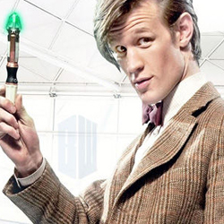

| Home | The Doctors | The Companions | The Villains |
|
|||
|
The Eleventh DoctorHugely energetic, occasionally flirtatious, and by his own admission, "a mad man", the Eleventh Doctor combined youthful looks with an old soul. Crashing into the lives of Amy Pond, and her boyfriend (later, husband) Rory, he solved the mystery of the time-erasing cracks in the universe, escaped his own death, restarted reality and even found time to marry River Song. A broken man after Amy and Rory were sent back in time by a Weeping Angel, and a Victorian-era Clara fell to her death, he decided to disappear. But it wasn't long before the lure of "the woman twice dead" brought the Doctor out of retirement. Finding his own tomb on the embattled Trenzalore and meeting a shameful, hidden past incarnation, started him on a path of redemption, teaming up with the Tenth Doctor to save Gallifrey rather than burn it. After sacrificing his life to defend Trenzalore, and granted a whole new cycle of incarnations by the Time Lords, the Doctor regenerated once more… |